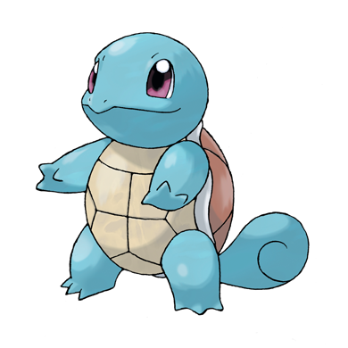

포켓몬 소개

이상해씨
등에 식물 씨앗을 지닌 풀/독 타입 포켓몬으로, 성장하면서 꽃이 피고 강해진다. 온순한 성격이며 햇빛을 받으며 에너지를 축적하는 특징이 있다.

파이리
꼬리 끝의 불꽃이 생명의 상징인 불 타입 포켓몬이다. 불꽃이 꺼지면 위험한 상태를 의미하며, 진화하면서 더욱 강력한 화염 능력을 가지게 된다.

꼬부기
단단한 등껍질을 가진 물 타입 포켓몬으로, 물을 강하게 분사해 공격하거나 방어한다. 위기 상황에서는 껍질 안에 몸을 숨기는 특징이 있다.

피카츄
전기 타입 포켓몬으로, 볼에 전기를 저장하고 방출한다. 귀엽고 활발한 성격으로 포켓몬스터를 대표하는 상징적인 존재다.
포켓몬스터는 포켓몬이라는 생물을 수집하고 육성하며 배틀하는 콘텐츠다. 트레이너가 되어 다양한 지역을 여행하면서 포켓몬을 잡고, 성장시키고, 다른 트레이너와의 대결을 통해 실력을 키워나간다. 각 포켓몬은 고유한 타입과 능력을 가지고 있어 전략적인 선택과 조합이 중요하며, 진화를 통해 더 강한 형태로 변화하기도 한다. 또한 체육관 관장과의 배틀이나 리그 도전 같은 목표를 달성하면서 점차 실력을 인정받게 되고, 전설의 포켓몬을 찾는 모험 요소도 포함되어 있다.